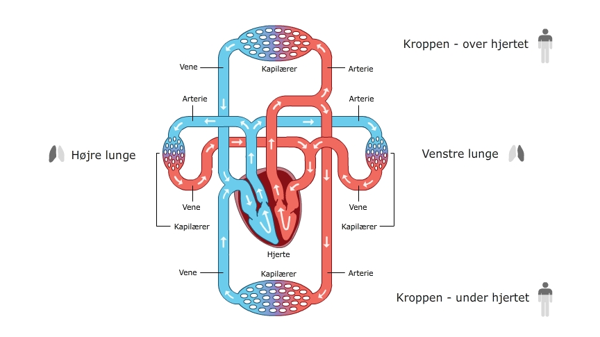
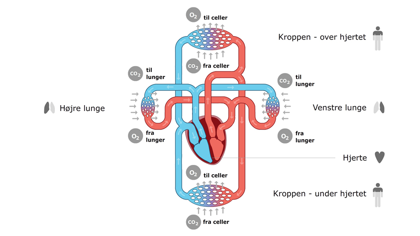

I sidste afsnit blev hjertets funktion beskrevet. Men hvor pumper hjertet blodet hen?
Hjertet pumper blodet ud i vores blodårer og rundt i hele kroppen.
Der findes to systemer, som begge løber igennem hjertet. Systemerne løber i ring - i en kreds - og kaldes derfor for kredsløb.
Det lille kredsløb løber fra hjertet og ud til lungerne og tilbage igen. På Animation 1 kan du se hjertet midt i billedet og lungerne til højre og venstre for hjertet.
Animation 1: Det lille og store kredsløb
I det lille kredsløb er blodet på vej til lungerne farvet blåt. Den blå farve betyder, at blodet ikke har meget O2 (ilt) i blodet. Derimod indeholder blodet meget CO2 (kuldioxid), som kommer fra cellerne.
Når blodet strømmer forbi lungerne, optager lungerne CO2 fra blodet. På samme tid strømmer ilt fra lungerne over i blodet. Blodet indeholder nu meget ilt. På tegningen er det vist ved, at blodet har fået en rød farve.
Når det iltede blod er kommet tilbage til hjertet, løber blodet ud i det store kredsløb. Klik knappen i animationen ved navn "Det store kredsløb" og se, hvordan blodet løber rundt.
Billede 1: Det store kredsløb med kapilærer, vener og arterier.
Det store kredsløb løber fra hjertet og ud til kroppens celler og tilbage igen. Cellerne bruger ilten fra blodet, og derfor forsvinder ilten fra blodet. Cellerne har også produceret CO2, som skal føres tilbage til lungerne. Blodet optager derfor CO2, der føres med op til lungerne. På tegningen er blodet blevet blåt igen.
Klik på knappen "Begge kredsløb" i Animation 1 for at følge blodet rundt i de 2 kredsløb. Prøv at lægge mærke til, hvornår blodet skifter farve.
Blodårerne har forskellige navne. På Billede 2 kan du se navnene på blodårerne. De store blodårer, der transporterer blod væk fra hjertet, kaldes arterier. De store blodårer, der transporterer blodet til hjertet kaldes vener.
Billede 2: Det store kredsløb med udveksling af O2 og CO2.
De store blodårer har en størrelse svarende til et stort sugerør (ca. 2 cm i bredden). De samler blod fra mange små blodårer og skal derfor kunne indeholde meget blod. Arterier og vener er dog for store til at nå ud til de små celler. Derfor bliver blodårerne mindre og mindre, indtil de er bitte små kapillærer. Kapillærerne har ca. samme bredde som et hår.
Blodårernes forløb er bygget op ligesom et træ. Forestil dig den tykke træstamme forneden og de lidt tyndere grene højere oppe. De tynde grene fordeler sig igen ud i mange mindre grene. På disse grene vokser små kviste, hvor bladene sidder på. Forestil dig, at bladene er de små celler, som skal have ilten transporteret hele vejen fra den store træstamme. I virkeligheden er det jo fra hjertet og de store artierier, gennem mindre blodårer ud til de helt små kapillærer, at ilten skal transporteres.
OPGAVE: Fortæl en god ven omkring kredsløbet.
Forklar hvornår blodet er iltet og hvornår det er afiltet. Fortæl personen, hvilken rolle hjertet har i kredsløbet og hvordan blodet løber rundt.
Iltet blod fra lungerne løber ud i det store kredsløb. Fra de store blodårer løber blodet ud i kapillærerne og helt tæt på cellerne. Ilten kan nu gå fra blodet og over til cellen. CO2 kommer fra cellen over i blodet og transporteres væk.